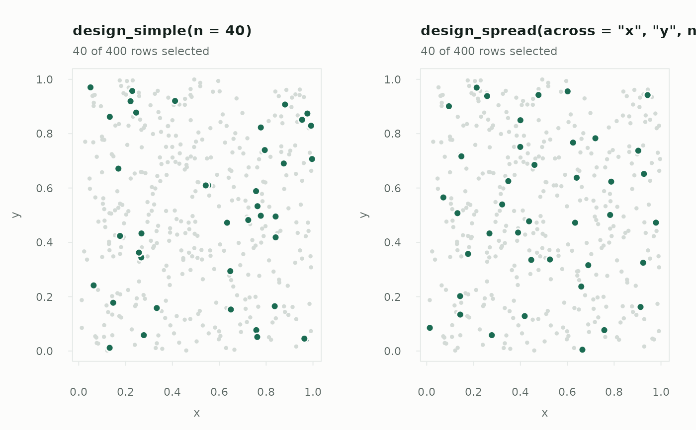

Draws a sample that is spread evenly across the space of one or more columns — map coordinates, or any numeric variables known for the whole frame — using the local pivotal method (Grafström, Lundström and Schelin 2012). Neighbouring rows compete for selection, so a sampled row makes its nearest neighbours less likely to be sampled too, and the sample avoids the clumps and gaps a simple random sample leaves behind.
Arguments
- across
Column names to spread the sample across: two coordinates for a map, or any numeric auxiliary variables. At least one.
- n
Number of rows to draw. Fixed, not expected.
- size
Optional column of positive size measures. When given, rows are included with probability proportional to size —
n * size / sum(size), with rows past certainty taken whole, exactly asdesign_weighted()— and spread at the same time.- scale
Standardise each column of
acrossto unit standard deviation before measuring distance. See "Spreading over more than space".- na_rm
Drop rows with a missing value in
acrossorsizeinstead of raising an error.
Value
A design object, for use with draw().
Details
The inclusion probabilities are exactly the ones asked for — n / N for
every row, or proportional to size — so the sample is estimable in the
usual way. What changes is which combinations of rows can occur: samples
that bunch up in one corner become rare. When what you measure varies
smoothly across the space, as most environmental, geographic and
operational quantities do, that is worth a large reduction in variance at no
extra cost.
Why this, and not a region
design_spatial() restricts a simple random sample to a polygon; it decides
where sampling happens, not how evenly. design_spread() decides how
evenly, and needs no polygon or sf — only the columns to spread across. The
two compose naturally: filter the frame to your region first, then spread.
Spreading over more than space
Nothing requires the columns to be coordinates. Spreading across auxiliary
variables that predict the outcome — last year's value, size, age — balances
the sample on them the way stratification would, without choosing strata
boundaries (Grafström and Schelin 2014). With scale = TRUE, the default,
each column is standardised first so that one measured in larger units does
not decide the distances alone; set scale = FALSE for coordinates that
already share a unit, such as projected metres.
Variance
The joint inclusion probabilities of a pivotal design have no closed form,
and treating the sample as simple random would give away exactly the gain
the spreading bought. ht_total() and ht_mean() instead use the local
mean variance estimator (Stevens and Olsen 2003; Grafström and Schelin
2014), which compares each sampled row with the mean of itself and its three
nearest sampled neighbours. It is an approximation, reported as
method = "local mean", and errs on the conservative side: in the
package's simulations it runs from about 1 to 1.6 times the true variance,
higher for small samples and large sampling fractions.
Cost
Each step finds a nearest neighbour among the rows still undecided, so the
draw takes time proportional to N^2: under a second for 5,000 rows, and
several seconds at 20,000. For much larger frames, spread within strata or
thin the frame first.
References
Deville, J.-C. and Tillé, Y. (1998). Unequal probability sampling without replacement through a splitting method. Biometrika, 85, 89–101.
Grafström, A., Lundström, N. L. P. and Schelin, L. (2012). Spatially balanced sampling through the pivotal method. Biometrics, 68, 514–520.
Grafström, A. and Schelin, L. (2014). How to select representative samples. Scandinavian Journal of Statistics, 41, 277–290.
Stevens, D. L. and Olsen, A. R. (2003). Variance estimation for spatially balanced samples of environmental resources. Environmetrics, 14, 593–610.
Stevens, D. L. and Olsen, A. R. (2004). Spatially balanced sampling of natural resources. Journal of the American Statistical Association, 99, 262–278.
See also
draw(), design_spatial() to restrict sampling to a region,
design_weighted() for size-proportional selection without spreading.
Other designs:
design_bootstrap(),
design_certainty(),
design_cluster(),
design_multistage(),
design_reservoir(),
design_simple(),
design_spatial(),
design_stratified(),
design_systematic(),
design_temporal(),
design_weighted()
Examples
set.seed(1)
plots <- data.frame(x = stats::runif(400), y = stats::runif(400))
# Something that varies smoothly over the map
plots$biomass <- 100 + 80 * plots$x + 60 * sin(4 * plots$y) +
stats::rnorm(400, 0, 10)
spread <- design_spread(c("x", "y"), n = 40, scale = FALSE)
s <- draw(plots, spread, seed = 1, weights = TRUE)
ht_total(s, "biomass")
#> Horvitz-Thompson total (spread design, n = 40)
#> estimate 65,956.1
#> se 916.2289 (local-mean approximation)
#> 95% CI 64,102.85 to 67,809.35 (t, 39 df)
#> deff 0.141 (better than simple random sampling)
#>
#> Local mean approximation for a spatially balanced sample: the local
#> pivotal method has no closed-form joint inclusion probabilities.
sum(plots$biomass) # the truth
#> [1] 65207.85
# The same total from a simple random sample: a wider interval
ht_total(draw(plots, design_simple(n = 40), seed = 1, weights = TRUE),
"biomass")
#> Horvitz-Thompson total (simple design, n = 40)
#> estimate 67,061.07
#> se 2,756.529 (analytic)
#> 95% CI 61,485.46 to 72,636.68 (t, 39 df)
#> deff 1 (about the same as simple random sampling)
# See the difference: spread points avoid each other
op <- par(mfrow = c(1, 2))
plot(design_simple(n = 40), plots, type = "map", coords = c("x", "y"),
seed = 1)
plot(spread, plots, type = "map", seed = 1)

par(op)